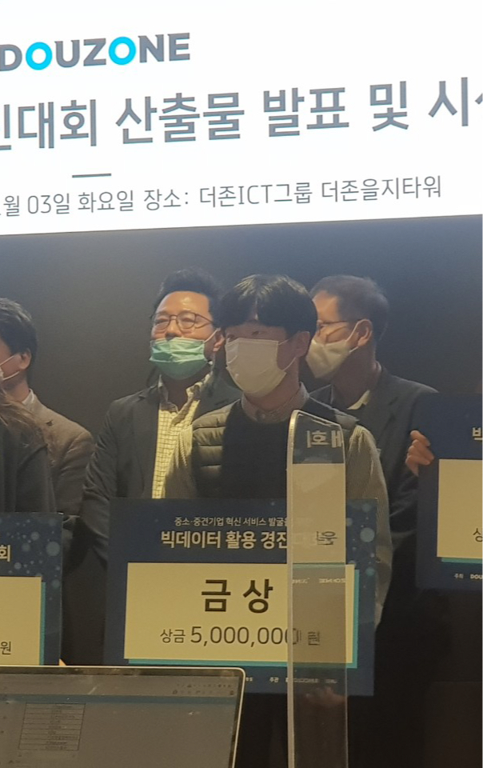

<!-- Main -->
<section id="main" class="wrapper style1">
    <header class="major">
        <h2>명예의 전당</h2>
        <p>공모전 수상 및 인턴,취업</p>
    </header>
    <div class="container">
        <div class="row">
            <div class="4u">
                <section>
                    <h3>이영빈(1기) 회원 <br>모두의 연구소 연구퍼실로 취직 </h3>
                    <p>2020-1학기 부회장이었던 이영빈 회원이 머신러닝,딥러닝 교육,연구기관인 모두의 연구소에 연구퍼실(정규직)으로 취직하였습니다.</p>
                    <ul class="actions">
                        <li><a href="https://mezcalagave.me" class="button alt"><center>블로그</center></a></li>
                    </ul>
                </section>
                <hr />
                <section>
                    <h3>인빅 역대 운영진</h3>
                    <ul class="alt">
                        <li><a href="#"> </a></li>
                        <li><a href="https://datata29.github.io">조의찬 (1기) : 2020-1~2020-2 회장  </a></li>
                        <li><a href="https://mezcalagave.me">이영빈 (1기) : 2020-1 부회장</a></li>
                        <li><a href="#">박병현 (1기) : 2020-1 교육팀장</a></li>
                        <li><a href="#">문지은 (1기) : 2020-2 부회장</a></li>
                        <li><a href="#">강동연 (2기) : 2020-2 홍보팀장</a></li>
                        <li><a href="#">서혜빈 (2기) : 2020-2 교육팀장</a></li>
                        <li><a href="#">김성아 (2기) : 2020-2 관리팀장</a></li>
                        <li><a href="#">김성아 (2기) : 2021-1 회장</a></li>
                        <li><a href="#">심현지 (3기) : 2021-1 부회장</a></li>
                        <li><a href="#">정재욱 (3기) : 2021-1 교육팀장</a></li>
                        <li><a href="#">김동찬 (2기) : 2021-1 홍보팀장</a></li>
                        <li><a href="#">김지현 (2기) : 2021-1 관리팀장</a></li>
                    </ul>
                </section>
            </div>
            <div class="8u skel-cell-important">
                <section>
                    <h2><center>더 존 빅데이터 경진대회 금상 수상</center></h2>
                    <h4><center>박병현(1기), 이원기(1기) , 김성아(2기), 강동연(2기), 서혜빈(2기)</center></h4>

                    <center></center>
                    <p><center>을지로 더 존 타워에서 진행된 중소기업 혁신사업 빅데이터 경진대회에서 <br>박병현 , 이원기, 김성아, 강동연, 서혜빈 회원이 금상을 수상하였습니다.</center></p>
                </section>
            </div>
        </div>
        <hr class="major" />
    </div>
</section>